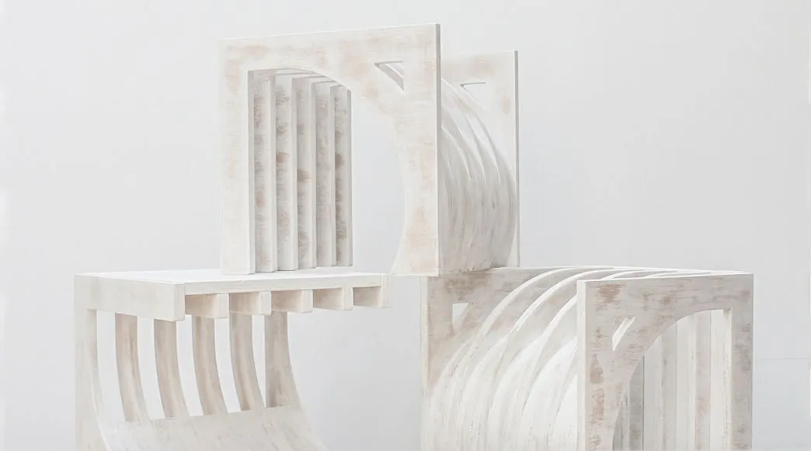
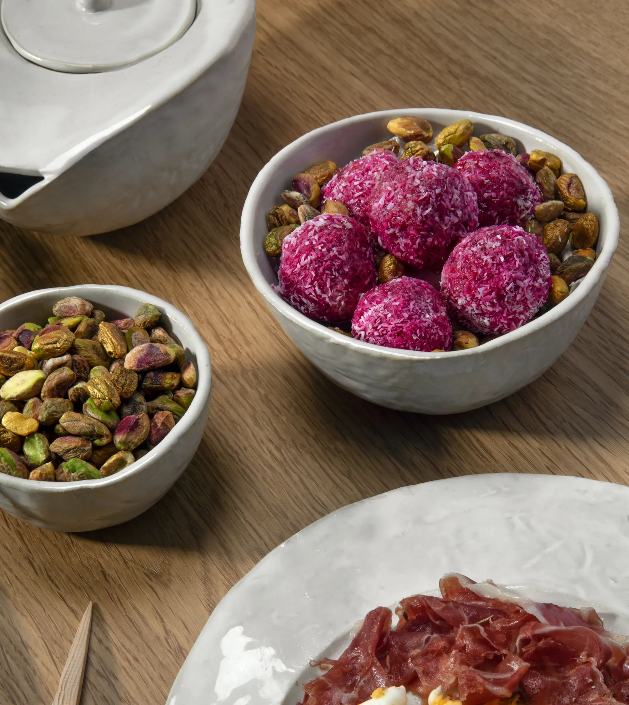
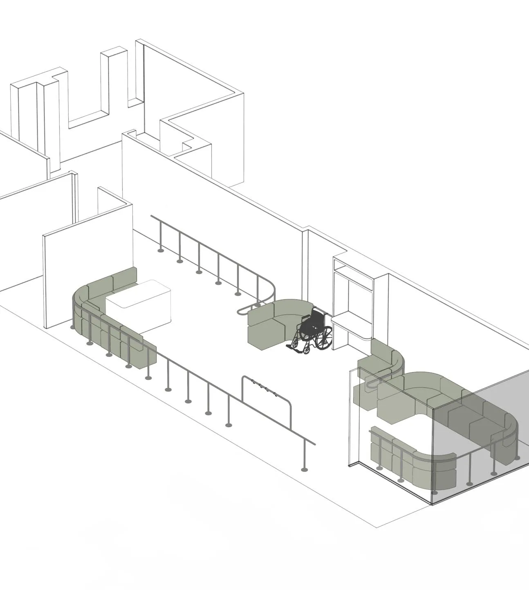
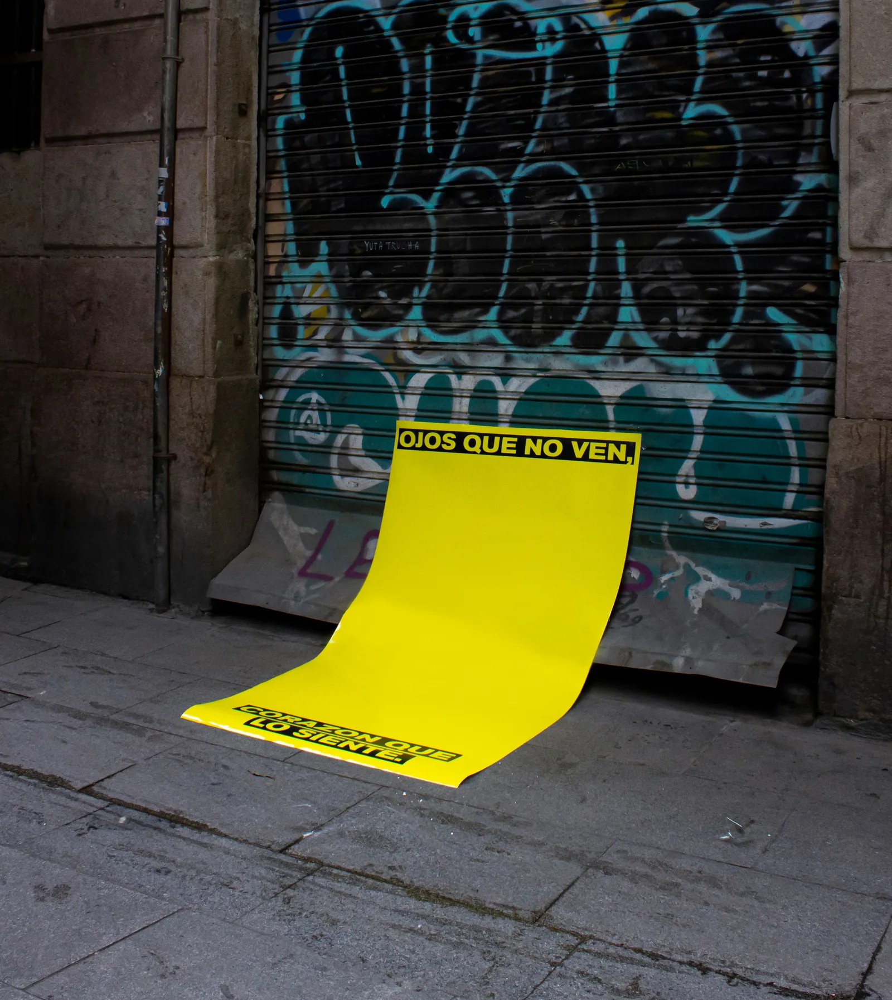

#ProductDesign #Furniture
ESCORA
Proyecto desarrollado en Elisava.
Un proyecto de mobiliario inspirado en el mar Mediterráneo y su historia.
Como resultado, se desarrolló un conjunto versátil de tres módulos cúbicos de madera contrachapada que funcionan como zapatero. Su estructura fue inspirada en el mundo de la pesca e imita las costillas del esqueleto estructural de un barco pesquero.

#FoodDesign #Pottery
CÓRDOBA
Proyecto desarrollado en Elisava.
Un proyecto personal que une las disciplinas del Diseño de Producto y el Food Design.
Una vajilla artesanal compuesta por seis piezas de gres con esmaltado blanco brillante, y un utensilio de madera. Les acompaña una narrativa gastronómica que se remonta a los orígenes de esta ciudad.

#ServiceDesign #Space
THE RAYLING SYSTEM
En colaboración con Elisava y el Ajuntament de Barcelona
Se propuso un plan de reforma de los espacios públicos interiores y exteriores del barrio de Vilapicina y la Torre Llobeta, junto con una red de actividades y servicios que se propuso para disminuir algunos de los problemas de movilidad que enfrenta la gente mayor a diario.
Le acompaña un sistema modular de raíles diseñados como elementos divisores de espacios, que cubrían necesidades de carácter ortopédico.

#GraphicDesign #Activism
POLITICS OF (IN)VISIBILITY
En colaboración con Elisava e Ideal, centro de artes digitales.
En conjunto con otros 5 diseñadores, realizamos diferentes carteles que fueron parte de una exposición en la vía pública, recogida posteriormente en el centro de artes digitales "Ideal" en Barcelona.
Todos con la intención de criticar y denunciar los espacios que habían sido alterados, para así, evitar que puedan ser ocupados por personas sin hogar.